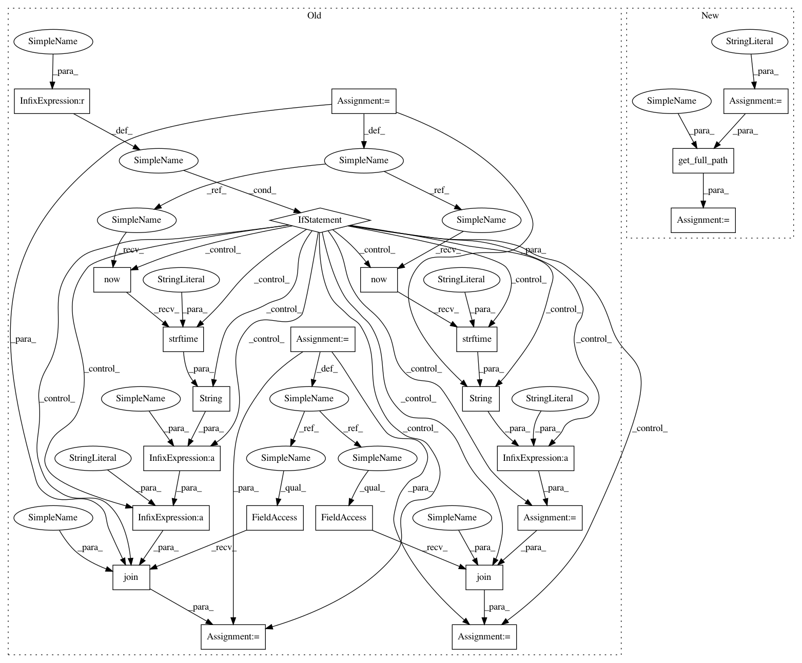

19c58e1d7a4c0040c3e72fd5bc5e8699f3efcf7a,utils/io.py,,store_dataframe,#Any#Any#Any#,6
Before Change
def store_dataframe(dataframe, output_dir, file_name=None):
assert os.path.exists(output_dir) or os.path.exists(os.path.abspath(os.path.join(os.getcwd(), output_dir))), "invalid path to output directory"
if file_name is None:
file_name = str(datetime.now().strftime("%m-%d-%y_%H-%M-%S")) +".pickle"
full_path = os.path.join(output_dir, file_name)
else:
full_path = os.path.join(output_dir, file_name + str(datetime.now().strftime("%m-%d-%y_%H-%M-%S")) +".pickle")
dataframe.to_pickle(full_path)
print("Dumped dataframe pickle to", full_path)
After Change
def store_dataframe(dataframe, output_dir, file_name=None):
suffix = ".pickle"
full_path = get_full_path(output_dir=output_dir, suffix=suffix, file_name=file_name)
dataframe.to_pickle(full_path)
print("Dumped dataframe pickle to", full_path)
In pattern: SUPERPATTERN
Frequency: 3
Non-data size: 23
Instances
Project Name: freelunchtheorem/Conditional_Density_Estimation
Commit Name: 19c58e1d7a4c0040c3e72fd5bc5e8699f3efcf7a
Time: 2018-01-21
Author: f4bio.ferreira@gmail.com
File Name: utils/io.py
Class Name:
Method Name: store_dataframe
Project Name: freelunchtheorem/Conditional_Density_Estimation
Commit Name: 19c58e1d7a4c0040c3e72fd5bc5e8699f3efcf7a
Time: 2018-01-21
Author: f4bio.ferreira@gmail.com
File Name: utils/io.py
Class Name:
Method Name: store_objects
Project Name: freelunchtheorem/Conditional_Density_Estimation
Commit Name: 19c58e1d7a4c0040c3e72fd5bc5e8699f3efcf7a
Time: 2018-01-21
Author: f4bio.ferreira@gmail.com
File Name: utils/io.py
Class Name:
Method Name: store_csv
Project Name: freelunchtheorem/Conditional_Density_Estimation
Commit Name: 19c58e1d7a4c0040c3e72fd5bc5e8699f3efcf7a
Time: 2018-01-21
Author: f4bio.ferreira@gmail.com
File Name: utils/io.py
Class Name:
Method Name: store_dataframe